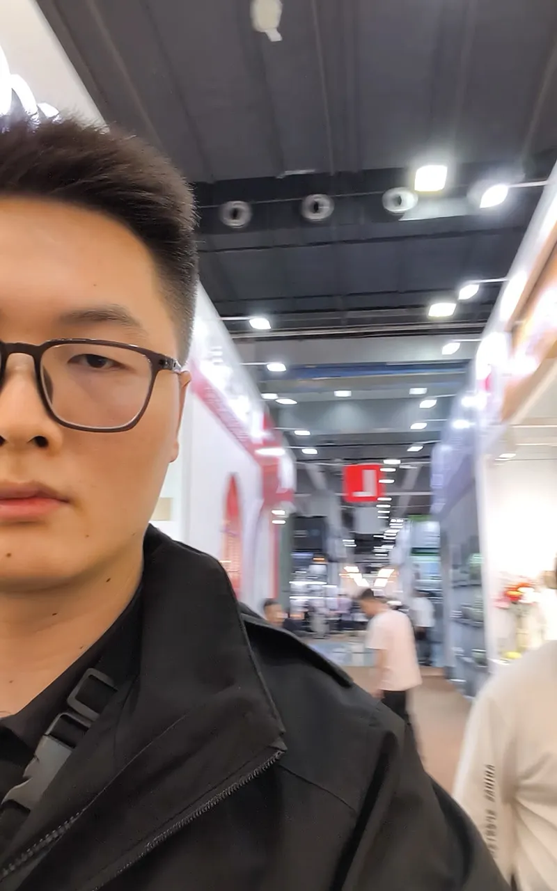

50,000 booths. Three days. One chance to turn the world's largest trade show into a pipeline of verified suppliers. I help you prepare, navigate, verify, and follow up — so you leave Guangzhou with more than just business cards.

I've walked the Canton Fair halls — now I help you navigate them strategically
Most buyers go to the Canton Fair unprepared and leave with a stack of cards they'll never follow up on. I provide structured support at every stage.
Before you arrive, I research potential suppliers by product category, identify must-visit booths, create a target list with booth numbers and hall locations, and brief you on what to expect.
Language barrier is the biggest time-waster at the Canton Fair. I translate conversations in real time, help you ask the right questions, and ensure nothing gets lost in communication.
Not every booth is a real factory. I ask verification questions, photograph products and facilities, check documentation, and assess whether suppliers are worth following up with.
Collecting cards is the easy part. I coordinate factory visits after the fair, negotiate terms, arrange samples, and help you build relationships with verified suppliers.
I've seen it happen too many times: buyers spend thousands flying to Guangzhou, wander the halls for three days, collect 100 business cards, and go home with nothing actionable.
Most Canton Fair salespeople speak basic English. Technical conversations about specifications, customization, and pricing get lost. You nod along, agree to things you don't understand, and wonder what you actually committed to.
Trading companies outnumber factories at the Canton Fair. They're skilled at looking like factories — but they mark up prices, don't control production, and can't deliver what they promise. Most buyers can't tell the difference.
50,000 booths. Three days. Which halls? Which booths? Where do you start? Most buyers either try to see everything (and remember nothing) or stick to the obvious aisles (and miss the best suppliers).
You get back home, look at your stack of cards, and realize you have no idea which suppliers are legitimate, which prices were real, and which contacts to prioritize. The cards go in a drawer. Nothing happens.
Within 48 hours of the fair ending, you receive a structured report that turns chaos into actionable next steps.
Every supplier I visited, organized by product category, with booth numbers, contact information, and my assessment of factory vs. trading company status.
Product photos, booth photos, and facility photos for every serious supplier — so you can review what you saw without relying on memory or business cards.
Quoted prices for your target products, with notes on what's included (tooling, samples, shipping) and what conditions apply (MOQ, payment terms).
My honest assessment of which suppliers are worth pursuing, with reasoning — not just a list of contacts, but a prioritized action plan.
Tell me what you're sourcing and when the fair is. I'll create a plan to turn your trade show visit into a pipeline of verified suppliers.